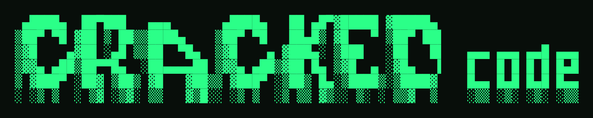

A small, fast coding agent for your terminal.
Built for Qwen3.8 Flash-Next on Strata, running on your own GPU. You type a task; it reads, edits, runs and checks your code until it's done.
- 2× faster than Qwen Code
- 7–10× fewer tokens
- /undo for every task
- MIT licensed
The short version
- 1Install
One command. Python 3.11+ and git.
- 2Point it at a model
Strata on port 8080 needs no config.
- 3Type a task
Run
crackedin your project folder.
Install
Linux. Windows works too, in beta.
1 Check your model server is up
Strata serving Qwen3.8 Flash-Next, on its default port:
curl -s http://127.0.0.1:8080/v1/models2 Install Cracked Code
uv tool install git+https://github.com/LGadd/Cracked-Code.git@v0.1.0No uv? Use pipx instead:
pipx install git+https://github.com/LGadd/Cracked-Code.git@v0.1.03 Run it in your project
cd ~/my-project
crackedOr one task and exit: cracked -p "add a --verbose flag to cli.py"
Using another server? (llama.cpp, Ollama, LM Studio)
Put this in ~/.config/cracked/config.toml. These work, but only Strata is tuned and tested.
base_url = "http://127.0.0.1:11434/v1"
model = "your-model-name"On Windows? (beta)
Install Git for Windows first: the model's shell commands run in Git Bash. Then use the same uv tool install command. Tested on Windows 11 with Ollama. Full guide: docs/windows.md.
What a task looks like
One line per step. The answer under a green bar. A rule when it's done.
>_ add a --verbose flag to cli.py and test it ● Reading the entry point first. ✓ read cli.py 84 lines ✓ edit cli.py +6 −1 ✓ shell python -m pytest -q 3 lines · 2.4s │ Added --verbose: it sets logging to DEBUG. │ All 12 tests pass. ── done · 31s · 4 turns · 3 tool calls · 1 file +6 −1 ────────
Why it's fast
Same model, same 11 tasks, same score. Less waiting.
On a local GPU, every prompt token costs reading time. Cracked keeps its prompt small (about 1,100 tokens) and does more per turn, so the model reads less and you wait less.
| Harness | Qwen3.8 (local) | GLM 5.3 Flash (cloud) | DeepSeek V4.1 Flash (cloud) |
|---|---|---|---|
| Cracked Code | 404 s · 174k tok | 126 s · 134k tok | 80 s · 159k tok |
| Claude Code | 592 s · 1.43M tok | 144 s · 1.27M tok | 137 s · 1.10M tok |
| Qwen Code | 825 s · 1.74M tok | 359 s · 1.30M tok | 167 s · 1.31M tok |
The commands you'll use
Type /help for the full list.
/undo- Put the files back to before the last task.
/diff- See everything changed this session.
/plan <goal>- Research and write a plan, then run it step by step.
/btw <question>- Ask a side question. It isn't kept.
@file- Send a file with your task. Saves a turn.
cracked -c- Carry on with this folder's last session.
Keys
- Shift+Tab
- Change mode (below).
- Ctrl+O
- Show the details: reasoning, turns, diffs.
- Esc
- Stop the task. The conversation is kept.
- Type + Enter
- Steer it while it works. It reads your message next.
Three modes
- ManualEdits ask you first, with the diff shown. The default.
- Fuck ItEverything auto-approved. Deletes still ask.
- InvestigateRead only. It looks, reports, and stops.
Safety: read this
It runs shell commands on your machine, with no sandbox. The model can do anything your user account can do.
- Snapshots: before every turn your folder is saved to a separate git store, so
/undoand/diffalways work. Your own git history is untouched. - Approvals: in manual mode, edits ask first. Deletes always ask.
- Deny-list: blocks the unrecoverable (
rm -rf /,mkfs, …). It's a seatbelt, not a security boundary.
Point it at a project folder, not your home folder. Use a VM for anything you can't afford to lose.
What you need
- Linux, or Windows 10/11 in beta with Git for Windows
- Python 3.11 or newer, and git
- A model server with tool calls. Tested: Strata + Qwen3.8 Flash-Next. Best effort: llama.cpp, Ollama, LM Studio, vLLM.